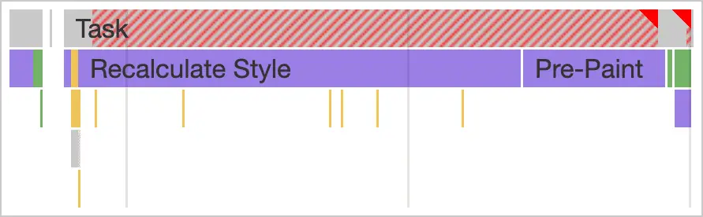

短答
非常大的 DOM 会增加主线程上样式和布局的工作。
分析器画面显示一个主要由样式重算构成的长任务。这种形态常常来自渲染目录的每一行、每一个隐藏面板，或把每个图标都做成很深的子树。SEO 健康要求模板渲染视图需要的东西。它不把节点数量上限公布为排名规则，截图也不是某家具名公司的结果。
定义
节点数本身是线索，不是判决。人们需要的长规格表可以很大，它仍然是文档。为只显示二十行的筛选器渲染两千行则是浪费。修复是分页或只渲染可见窗口，同时让可索引的 URL 仍是真实文档，而不是一个无尽页面。
渲染对爬虫意味着什么变化
找出构建的节点远超视图显示的模板，分页或窗口化，同时不要藏起文档文字。
把行从 HTML 里完全移除的客户端窗口化，会把渲染与抓取的问题带回来。在 HTML 里包含本页行的分页 URL，既能缩小 DOM，又保留可获取的文档。审计样例应该写明你拥有的是哪一种。

要检查什么
- 把隐藏行或面板渲染成完整子树的模板
- HTML 中包含可见行的分页 URL
- 删掉文字唯一副本的客户端窗口化
- 一条对比或目录 URL 作为样例
- 没有把通用节点数规则当成名次
一个结构示例
对比工具把每个 SKU 的每个属性都渲染进 DOM，再用 CSS 藏起除一列以外的全部。样式工作仍然会碰到隐藏节点。健康改动是渲染选中的列，并将其余部分链接到分页 URL。被藏起的列并不是额外的文档。
它不声称什么
更小的 DOM 不保证排名或引用。
Mika Visibility 把它归到哪里
Mika Visibility 把渲染当作 SEO 健康问题：当模板依赖 JavaScript 时，重要 HTML 能否在有脚本和无脚本两种情况下被获取并比较。这种比较不是 GEO 审计，也不是市场覆盖计划。发现要附在样例 URL 上。模板改完之后的再审计，用来确认修复。
分析器图显示样式工作，因此文章可以讨论节点成本，而不把时长当成结果引用。
常见问题
为什么 DOM 规模会影响主线程？
非常大的 DOM 会增加主线程上样式和布局的工作。
应该用什么替换完全渲染的隐藏表？
找出构建的节点远超视图显示的模板，分页或窗口化，同时不要藏起文档文字。
更小的 DOM 能保证排名吗？
更小的 DOM 不保证排名或引用。
下一步
做一次结构化的 SEO + GEO 审计，查看健康发现、增长缺口和可以执行的蓝图。
更清晰的实体、答案、证据和上下文，会让页面更容易被理解与引用。任何回答产品中的结果都不作保证。